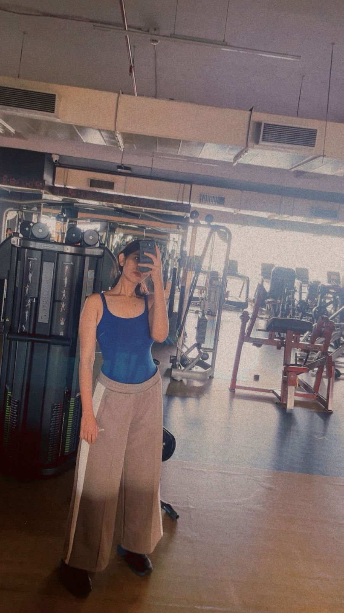
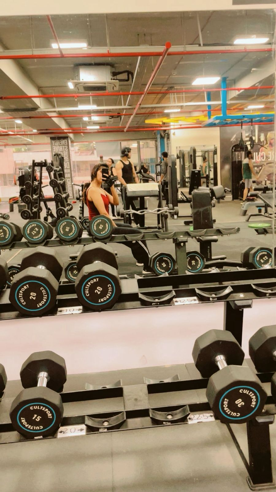
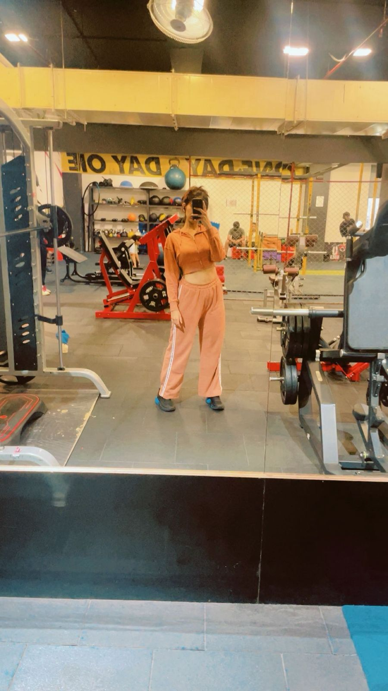
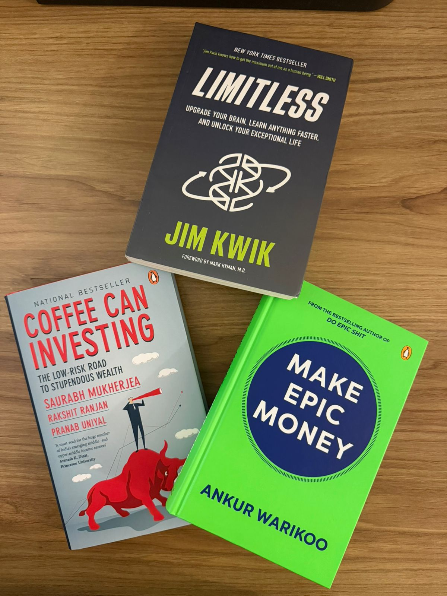
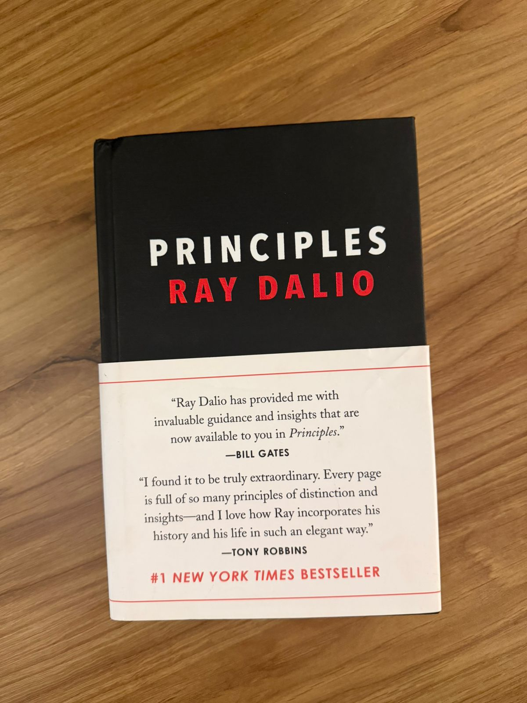
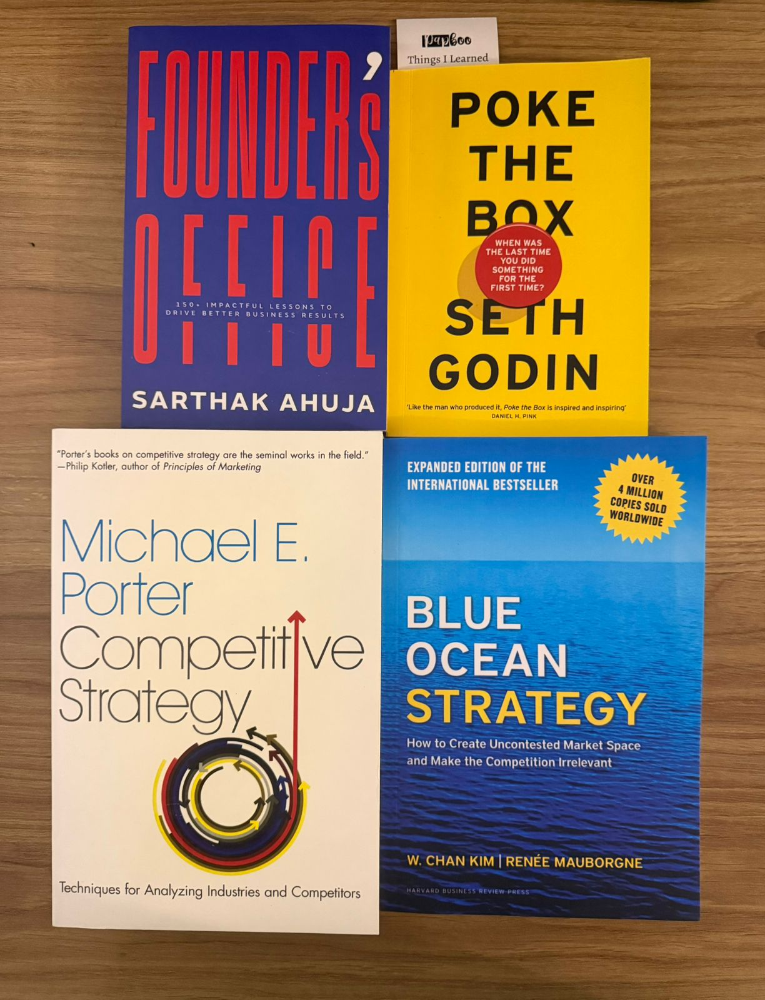
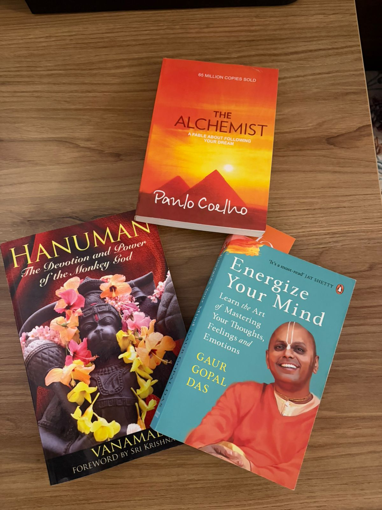

I'm curious. Like, annoyingly curious. About people, about why things are the way they are, about what someone actually means when they say they're fine. I read body language, I notice things, I try to understand humans maybe too much sometimes. But I can't help it. That's just how my brain works.
I love helping people. Genuinely. Friends, family, anyone. If someone around me is struggling, I'm going to try to fix it. Not because I have all the answers I don't but because if even one thing I do can bring a smile to somebody's face, why wouldn't I? The feeling you get after that? I can't even explain it.
I dream about travelling. I haven't been to many places honestly, but I've fantasized about all of them. Exploring the unexplored that's always been the dream.
There are a hundred things going on in my head at any given moment. I'm ambitious, I'm driven, but I also get overwhelmed. I'm still working on the discipline part. I think I'm halfway there. Still figuring it out.
Oh boy, what a journey this life has been. So much to learn, so much to give, so much to take. I'm not the best version of myself yet I know that. But I'm not afraid of it either.
Be thankful for what you have. Live the present. That's it. That's the whole philosophy.
A portfolio wouldn't be enough to define who I am. But this is my attempt.
I never planned to lose 35 kilograms. I just loved food, I still do.
But my body started sending signals I couldn't ignore. Health reasons. The kind where a doctor looks at you and you know the conversation isn't casual anymore.
So I started moving. Cardio, nothing fancy. The first five kilograms came off and something shifted not just on the scale, but in my head. For the first time in a long time, I felt confident. Not the loud kind. The quiet kind, the kind where you look in the mirror and believe the person staring back can actually do this.
Two years of showing up. Two years of choosing the run over the couch. 108 became 73. Pure perseverance, no shortcuts, no hacks, just hard work compounding day after day.
I won't pretend the story ends clean. I still deal with loose skin. I'm trying to get consistent with weight training and honestly, I don't love it the way I loved cardio. Some days are harder than others.
But here's what 35 kilograms taught me: if you believe you can do something, the process stops feeling like a burden and starts feeling like part of your life. It still takes time. It still takes hardwork. But when the results come that feeling is out of this world.
I might not be where I want to be yet. But I'm proud of the journey, the person it made me, and the fact that I earned every single kilogram of it. Perseverance, confidence, belief I didn't read about these words. I lived with them.



Books are my calm in chaos. Literally.
I might not remember everything I read honestly I probably forget most of it. But there's always this one thing from each book, one line, one idea, one learning that just stays with you. And that's enough. That's always been enough.
I love the smell of books. I know that's the most cliché thing a reader can say but I genuinely do. There's something about holding a physical book that no Kindle will ever replace.
I also have this weird habit I carry a book with me wherever I go. Doesn't matter where. And I know I'm probably not going to read it. I know that. But just having it close to me gives me this peace, this calmness, a feeling I can't really explain. It's like a safety net I never actually use but always need to have.
Books are just a part of me. A part I never want to lose.




Writing comes naturally to me. It always has.
I've always been vocal about my feelings with people I love, but there's something different about writing it down. When I speak, I forget what I wanted to say. But when I write, it just flows. Like butter. One thought leads to the next and the next and suddenly there's a whole chain of things pouring out of me that I didn't even know were in there.
That's the part I love the most: the unexpected. You sit down to write one thing and you end up discovering something about yourself you didn't know was sitting there, waiting.
I haven't published much. Honestly, I have so many unfinished pieces just sitting in my drafts. Not because they're incomplete — most of them are done. But I can never figure out the ending. The piece could be finished and I'll still feel like it's not. That feeling of incompleteness stops me every time. It's the one thing about writing I'm still fighting with.
I'm no writer. Not at all. But the feeling it gives me? Surreal. A blank page with no judgements, no fear, no audience — just you and your thoughts. That's always been the purpose. Pour it out, open up, express. That's it.
I want to always keep that alive in me.
I left my job because life asked me to. Family reasons the kind you don't get to plan for. One day you're in a standup talking about sprint velocity, and the next day none of that matters anymore.
The first few weeks were weird. You spend three years waking up knowing exactly what you're supposed to do, and then suddenly there's nothing. No Slack pings, no standups, no pull requests waiting. Just silence. And honestly? The silence was loud.
Everyone around me had opinions. "Take a break, you deserve it." "Don't take too long, gaps look bad." "Have you tried applying to Google?" I heard all of it. And for a while I didn't know who to listen to including myself.
But I knew one thing I didn't want to just jump into the next thing for the sake of having something to do. I've seen people do that. Take the first offer, update the LinkedIn, move on. I didn't want to be that person. Not because there's anything wrong with it, but because I had this feeling that if I don't figure out what I actually want right now, I never will.
I liked DevOps, always had. Got myself certified by CKA, CKAD, Terraform, AWS. Cleared all four. Had a lot of fun doing it honestly. There's something satisfying about studying for something, showing up, and proving to yourself that you can do it. Those four certificates weren't for my resume they were for my confidence.
And I had a plan. Move into DevOps engineering. I thought that was it. I thought I liked it enough.
But even with the plan in place, something didn't sit right. I couldn't explain it at the time I was doing the work, clearing the certs, telling people "yeah I'm moving into DevOps" and yet there was this quiet feeling that I wasn't fully sure. Not about DevOps. About whether this was really it for me.
So I did what I always do when I'm unsure I went digging. Read about different roles, different paths, talked to people, tried to understand where I'd actually fit. And that's when I came across product management. Not from a career counsellor or a LinkedIn ad from my own research, my own reading, my own gut.
I signed up for a PM fellowship. Then a Founders Office fellowship. And those fellowships broke something open in me. For the first time, I was in rooms where people were talking about users, about product decisions, about trade-offs that actually mattered. And I wasn't lost in those rooms. I was home.
I don't want to sit behind a laptop waiting for AI to write code for me. I want to be in the room where the product is being decided. I want to be the person asking why, not just how.
I won't pretend this break was some beautiful montage of self-discovery. There were days I felt behind. Days I scrolled LinkedIn and saw people my age getting promoted and wondered if I made a mistake. Days where I had ten ideas and zero energy to act on any of them. Days where I just sat with the discomfort of not having a job title to introduce myself with.
But there were also days where something clicked. Where I read something and thought "this is exactly what I want to do." Where I finished a fellowship project and felt more alive than I ever did shipping code. Where I looked in the mirror and for the first time in a long time, I wasn't performing I was just being myself.
I didn't do everything perfectly during this break. I was confused, I was messy, some days were harder than others. But every step even the uncertain ones taught me something about who I am and where I want to be.
This break didn't set me back. It just pointed me in the right direction.